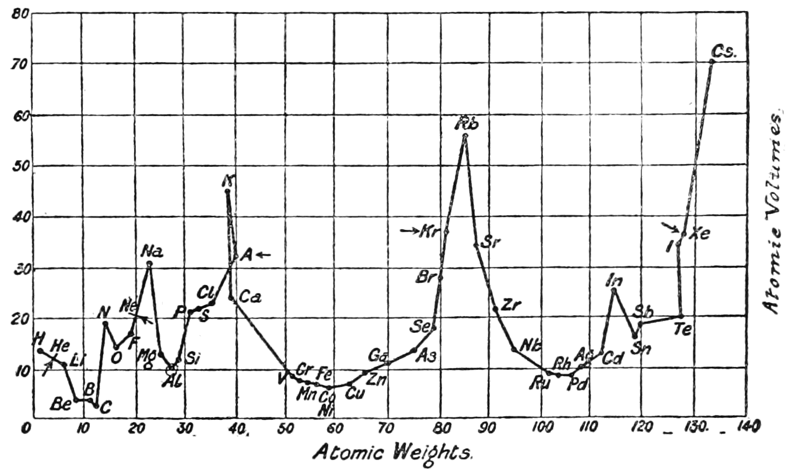
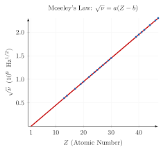

Classification of elements was proposed in order to Study all the elements in the systematic manner. The basic object and need of classification can be best stated in the word in Fluxley.
The actual or ideal arrangement together of those which are alike and seperation of those which are unlikethe purpose of this arrangement being primarily to disclose the correlation, on the laws of motion, on the laws of union, on properties, on circumstances and secondary to facilitate the operation of the mind in clearly receiving and then retaining in the memory the characteristics of the objects in question.
Till 1800, only 31 elements were known. By 1865, number of identified elements were 63. At present, 118 elements are known. With such a large number of elements, it is difficult to study individually the chemistry of all these elements and their number of compounds. Main aim behind this classification was to keep the elements if same properties together, so that by studying one element out of that group, we can have general idea about the properties of all the elements in that group.
1st attempt towards the clasification of elements was made by Johnn Wolfgang Dobereiner in 1817. He arranged elements in the group of three and in such a way that the group of three and in such a way that the atomic weight of middle elements was equal or nearly equal to the average of atomic weight of other two elements.
| Traids | ||||
|---|---|---|---|---|
| I | 7Li | 23Na | 39K | |
| II | 40Ca | 87Sr | 137Ba | |
| III | 35Cl | 80Br | 127I | |
| IV | 32S | 67Se | 106Te |
in 1865,John Newland observed that in series of elements arranged in the increasing order of atomic weights , 1st and 8th elements have the same properties. Now, a days, 1st and 9th elements have the same properties in that series because noble gases were discovered late.
| 1 | 2 | 3 | 4 | 5 | 6 | 7 | 8 |
| Li | Be | B | C | N | O | FNe | Na |
| 9 | 10 | 11 | 12 | 13 | 14 | 15 | 16 |
| Mg | Al | Si | P | S | ClAr | K | Ca |
Lother Mayer used the physical properties such as atomic volume , melting point and boiling point to construct a graph showing similarities among particular set of elements.

The physical and chemical properties of the elements are the periodic functions of their atomic weightIn the Mendeleev's Periodic law, the word function recognizes a change in porerties of the elements with change in atomic weight, the word periodic determines the direction the direction of change. the change is not unidirectional i.e. continuously decreasing or increasing. Two consecutive elements were expected to have a difference of atleast one unit (and upto four units) in their atomic weights.
(a) Group and sub groups : The table is divided vertically into columns called Groups. These are numbered I to VIII and then zero with the excption of zero and VIII group, each group is further subdivided into sub groups A and B.
(b) Periods : Horizontal rows are called Period.
- Position of Hydrogen: Position of Hydrogen was not justified.
- Position of isotopes : isotopes should beplaced seperately accroding to periodic law. But actually one place was given to all isotopes of an elements.
- cause of periodicity : mendleev could not explain why elements exhibits a periodicity in their properties when arranged in the order of increasing atomic weight.
- Anomalous Pair of elements :
(a) Tellurium 127.60 VI Iodine 126.91 VII (b) Argon 39.94 Zero Postassium 39.10 I
Moseley calculated the atomic number of elements by X-ray method. He plotted the graph between v1/2 of X-ray and Z.
On the basis of graph , He proposed the modern Periodic law.
The physical and chemical properties are the periodic function of their atomic numbers
| Elements | Atomic Number | Atomic Weight |
| Ar | 18 | 39.94 |
| K | 19 | 39.10 |
| Co | 27 | 58.94 |
| Ni | 28 | 58.69 |
| Te | 52 | 177.60 |
| I | 53 | 126.91 |
Periods Number of elements 1st Period 2 2st and 3rd period 8 4th & 5th period 18 6th period 32 7th 32
Nomenclature of the elements with atomic number >100.
The IUPAC names are derived by using roots for three digits atomic number of the elements
0 1 2 3 4 5 6 7 8 9 nil un bi tri quad pent hex sept oct enn
Elements in which last electron enters into s subshell,
General Electronic configuration= ns1-2 He belong to p block Group: 1&2Characterstics :
- Except Be & Mg , all import charactersics colour to the flame .
- These have low ionization energy.
- These are highly reactive.
- These are the highly electropositive elements.
elements in which last electron enters in p subshell,
General Electronicc configuration = np1-6. Group : 13, 14, 15, 16, 17, 18.Characterstics ,
- The compounds of p-block elements are generally covalent although their ionic characters increases down the group.
- From left to right 13 to 18, reducing character decreases.
- The p-block elements generally shows more than one oxidation state .
THe elements in which last elecron is filled in d subshell are palced in d-block.
General Electronic configuration = ns0-2(n-1)d1-10 Group : 3 to 12Characterstics :
- d-block is classified into four series
3d series --> Sc to zn 4d series --> Y to Cd 5d series --> La to Hg 6d series --> Ac to CnThese elements shows metallic lusture and high thermal and electrical conductivities .
- These elements have high melting points(all are solid except Hg)
- These elements are less electropositive that s block elements.
- These elements have variable oxidation state .
The elements in which last electron is expected to be filled in f subshell are placed in f-block.
f-block elements is classified into two groupsLanthanoids (n-2)f1-14(n-1)d0 or 1ns2 Actinoids (n-2)f0-14(n-1)d0-2ns2Characteristics :
- All the actinoids are radioactive. Elements after uranium are known as transuranium elements.
- They form coloured compounds.
- They generally have high melting and boiling point.
- Most common oxidation state is + 3.